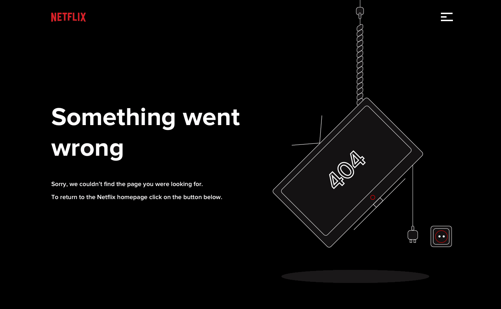

<section class="notFound py-5 ">
    <div class="container my-3 w-75 mx-auto rounded-5 overflow-hidden  ">
        <h1 class="text-center">Warning</h1>
        
        <button (click)="NotFound()"  class=" d-block my-4  mx-auto notFoundBtn">Back To Home</button>

    </div>

</section>